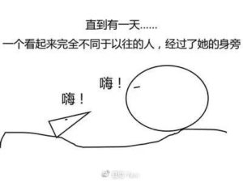

作者：千与
今年三月末，为时三个多月的千与占星初阶课程，在一片欢笑声和热烈讨论中结束了。
当初，班上的每位同学都是为了要更多、更深入地了解自己，或者携带着一堆烦恼、或者怀揣着某个看似无解的生命课题，进入千与的占星课堂，正式开始学习占星——和几年前的我一样。
这些烦恼和课题，细谈起来，都是重量级：童年遗留的心理创伤，情感关系中的挣扎，生死危机的梦魇……不论被怎样的机缘牵引，进入神秘学这扇大门的你，都是敢于直面问题并希望获得蜕变和成长的生命勇者。
占星学习，是一个探讨人性、探讨自我、揭开谜底的过程，相当的有趣。但那过程也有点像剥洋葱，特别是初时，火辣辣的真相有时真让人想掉眼泪，或感到很愤怒，甚至在想象里已经把让自己如此受苦的某甲某乙给来回胖揍了十八回合。
然而……到了最后，却发现始终是自己的功课。就像身心灵作家张德芬老师那本畅销书的标题：亲爱的，外面没有别人。
尤其在“亲密关系”中，伴侣、父母、孩子等等，都是自己的一面镜子。实际上，他们都是来帮助自己修行的好伙伴。只不过，有时候是以我们喜欢的方式，有时候是以我们讨厌的方式。
（同样的，我们也是他们的镜子）
或许，这样的话你已经从不同途径听了很多遍，耳朵都快长茧子了。没错，真理本来就是很简单的……不论以什么方式被传达出来，最后都殊途同归。
占星学，是其中一种，让人不得不服的方式。本命星图摆在那里，清清楚楚地描述了自己的性格蓝图。
你欣赏怎样的人？你容易被什么特质的人吸引？你讨厌怎样的人？你最看不惯的缺点是什么？
星图上一一显示出与答案相符的线索。
在批改学生作业的过程中，我发现，在自我剖析的过程中，同学们一开始理所当然地将自己的不满、不快乐、不顺利归咎于父母、伴侣、周围的环境等等，但越到后面，这种声音越来越少。最终，每个人都开始意识到，找根源还需回归自身——如果想要活得更有智慧、更快乐的话，必须抛弃自怜的心理，拿起主动权、运用自己的能力与才华，尽情创造独一无二的生命。而非以受害者的姿态，抱怨命运的不公。
这不是一碗鸡汤，从神秘学的角度，这确实是灵魂来这个世界的本来目的。
就拿第七宫来说，这是与一对一亲密关系的宫位，也是典型的投射宫位。第七宫的宫头，也就是我们的下降点，是隐藏于内，不被自己觉知或不愿意承认的特点。在我们活出下降点和第七宫的特质之前，会自然而然地将它们投射到他人身上演出。
这听起来有点儿抽象，我们用实例说明：
小郭同学的上升落在天蝎座，下降落在金牛座，她是一个感情丰富的女孩子（上升天蝎），她每次都不由自主地被那些看起来平静、稳重、懂得享受生活的人吸引（下降金牛），这类型的人似乎能够轻易地安抚小郭那动荡起伏的情绪、以及容易不安的内心世界。另外，小郭的木星落在七宫。所以，她也特别喜欢自信、乐观宽容、喜欢冒险、喜欢体验的人。
不仅她交往的男友，和她亲近的许多好友也是这一类型。小郭十分欣赏和羡慕他们这些优点。
其实，那些优点是她自己本来就有的潜质。她所吸引来的恋人和朋友就是她的榜样，让她学习淡定、宁静的生活态度，以平衡自己上升天蝎那容易感到不安的激烈性情。
但是，随着与男友交往时间的延长，小郭开始嫌弃他太懒惰、沉闷乏味。并且，男友太喜欢自由，不愿意受到束缚，显得不负责任，让她没有安全感。很明显，这是下降点金牛和七宫木星的缺点。但是，如果小郭有很强的自我觉知，她会发现——这些所谓的缺点，她自己身上也有。
但自我觉知绝非易事，大多数人都是被自己的习惯模式牵引着走。于是小郭对男朋友越来越不满意，他们开始不断发生争执。
一开始男友吸引她的地方，变成了让她不安的因素。
亲密关系是一面忠实的镜子。实际上，小郭所欣赏的男友优点，和讨厌的男友的缺点，都是她自身的一部分。因为她有这些特质，所以会吸引来具备相似特质的人，这就是吸引力法则。
能量振动频率相似的人会走到一起。
从另一个角度讲，我们每个人天生都戴着一副有颜色的眼镜在看待这个世界，当你的眼镜是黄色的，那么你所看到的一切也都是黄色的。而同样的事物另一个人看到的却可能是粉色。每个人都不可避免地以自己的主观角度来解读他人，这就是投射。换言之，小郭的男友或许确实有些懒散和沉闷，但她却将这个缺点加倍放大了，并且渐渐将关系变成符合自己习惯的模式。通常，那是我们从小被父母所对待的模式。
那该怎么办呢？难道我们只能被惯性模式牵着鼻子走吗？
其实，解决的办法，理解起来很简单，那就是：尽量活出那些你欣赏和羡慕的特质，并下功夫改变那些你讨厌的缺点。简而言之，从别人身上看到的好与不好，都是为了提醒自己去发挥或修正，让自己活得更完整。所以，我们需要感谢每一位曾经或正在陪我们做关系功课的人，要不是他们，我们还看不到自己的潜力、优点和缺点呢。
（虽然现实情况往往是，我们不仅不感谢，有时候甚至将他们视为世界上最讨厌的人，也难怪代表亲密关系的第七宫会被称为“公开的敌人”）
当然，这一切的前提都是——需要有高度自我觉察的能力。
占星学，说到底，就是为了提升一个人自我觉知的能力。
至于对方的灵魂成长，亲爱的，那就不是该你操心的事儿了。即使那个人是你枕边的伴侣、你的爸爸妈妈、你的子女、好闺蜜……
做好自己，一般说来，身边人就会自然而然地跟着发生积极正面的转变。然而，那并不是我们的目标。
换言之，每个人只能对自己负责。
况且，细想一下就知道，希望他人改变和成长，表面上是为对方好，底下却是出于掌控的欲望以及自保的恐惧。
在成长之路上，每个灵魂都有偏好的节奏与独特方式。
爱，首先是建立在无惧和尊重之上。
在上面的例子中，如果小郭把自己星盘上金牛和木星的特质拥抱进来，达到上升与下降的平衡后，就会吸引来能量更平衡的朋友与爱人。她不再是一个极端，因而不需要另一个极端，玩着彼此补洞的游戏。彼时小郭的爱情或婚姻，也将是两个相对圆满个体的互相陪伴、共同成长的高品质亲密关系。
推荐：
曾经在网络上流传很广的漫画《失落的一角遇见大圆满》，亚尼非常喜欢。（完整版本请查看本公众号4月7日的文章）。

这条自我圆满之路，很长。
祝福看到这篇文章的你，已经在路上，不再傻傻地幻想或期待另一个人来填补自己的匮乏，而是自己圆满自己。